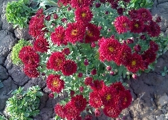
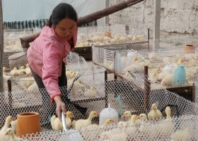
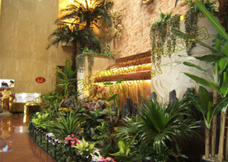
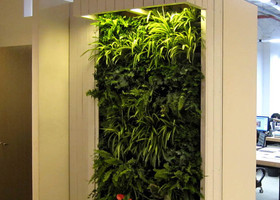
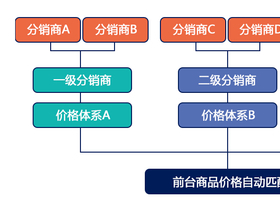

-
-
推荐世界上最美的8款垂吊花~
童童 发表于 11月30日 20:45
有一类花，它们花开后没有朝着太阳肆意张扬，而是谦卑地低头感谢大地，它们的惊艳不轻易流露，只待你俯下身去慢慢发现。今天花花带大家去看看，世界上最美的8款垂吊花，只需一眼，你可能就会爱上她！ ... （查看全文)
来自:闲暇时光 主题站 83次阅读0评论
-
多肉植物过冬篇！
童童 发表于 11月29日 17:42
气温不断下降，多肉植物仙人球的生长逐渐由炎夏高温季节的半休眠状转入全年第二个生长旺季。从前培养的仙人球，在此期间进行大肥大水的管理，促其旺盛生长。这种做法只适用于有加温条件的家庭，一般养花养肉家庭不具... （查看全文)
来自:多肉植物馆 主题站 120次阅读0评论
-
-
-
-
-
-
-
-
11月多肉植物养殖技巧~
童童 发表于 11月20日 20:26
11月，天气逐渐变冷，肉肉控们，你知道11月多肉应该怎么养吗？接下来小编就为花友们介绍十一月多肉养护秘诀，收好咯！11月多肉养护秘诀总结出来就一句话：“北方注意防寒，南方可劲儿晒，越晒越美丽。”... （查看全文)
来自:养花知识 主题站 345次阅读0评论
-
-
户外旅行必备6种救命植物！
童童 发表于 11月17日 19:21
如今在户外爱好者的圈子里讨论装备的帖子有很多，很多人都认为带什么丛林王之类的极品装备是户外者的标志。但其实，在户外遇到特殊情况时，如果你认识以下几种植物，生存机会比手持丛林王之类的装备要有... （查看全文)
来自:养花知识 主题站 363次阅读0评论
-
-
-
-
-
-
中国四大名花，你知道吗？
童童 发表于 11月27日 20:06
说起中国四大名花，可能你的第一反应是肯定很美啊！但其实它们除了观赏价值之外，同样是养生的好宝贝！今天花花就带大家看看我们四大名花壮观的美，再聊聊它们的神奇功效！牡丹【山东菏泽】 菏泽是世界上... （查看全文)
来自:闲暇时光 主题站 682次阅读0评论
-
养花知识 主题站
最丰富的园艺资讯，最全面的种植交流，爱花爱绿色生活。
多肉植物馆 主题站
阳光洒在肉肉上的时候，闪闪发光，因为它们笑了。
植物种植图解 主题站
清晰简洁的植物养殖方法及花卉种植过程图解
组合盆栽 主题站
园艺乐趣与创意的天作之合，开启心灵深处景致世界之窗。
多肉植物馆 主题站
阳光洒在肉肉上的时候，闪闪发光，因为它们笑了。
养花知识 主题站
最丰富的园艺资讯，最全面的种植交流，爱花爱绿色生活。
求花名 主题站
它从哪里来，有没有一个美丽的名字，爱不爱璀璨的晴阳？
闲暇时光 主题站
闲时养花养草养心情，在这里，没有打扰，没有烦恼。
奇花异草 主题站
掰一掰那些你见过的奇花异草吧！感受大千世界的多姿多彩。
植物种植图解 主题站
清晰简洁的植物养殖方法及花卉种植过程图解
身边的一平米 主题站
身边一平米，电脑桌的尽头，台灯90度的角落...下一个转身的偶遇。
花海旅途 主题站
人在旅途，花在心中，体验花海人生中，不经意间千般百种！
-

耐寒宿根花卉
-

养鹅成本预算
-
沙巴旅游
-

仿真植物
-

室内植物墙
-
网页制作
-

三级分销系统


 养花日记
养花日记 护花山庄
护花山庄 更多应用
更多应用